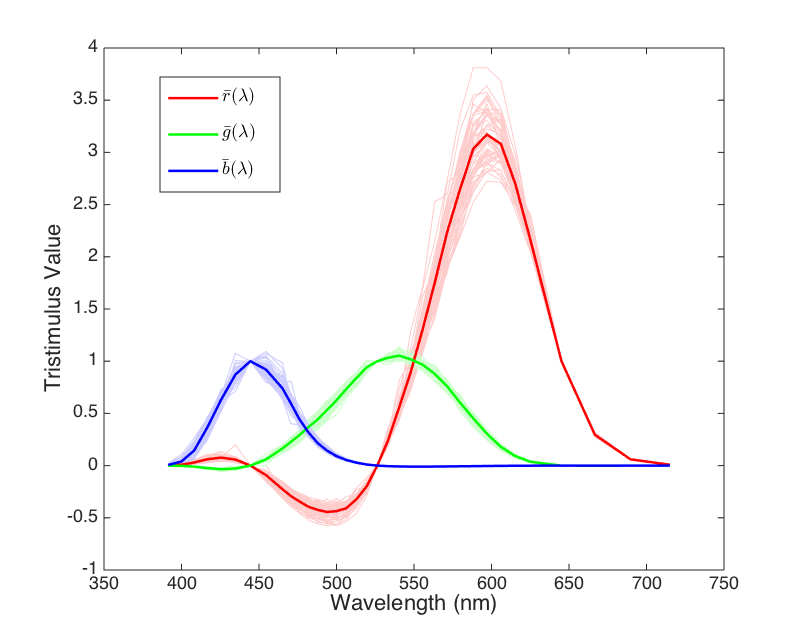

概述
颜色可以分为彩色和非彩色。
彩色的三个特征：
- 明度：颜色明亮的程度，与发光强度有关；
- 色调：指对应波长不同的颜色，其色调也不相同；
- 饱和度：颜色接近光谱色的程度，即颜色中彩色的比重。颜色可以看作光谱色和白光的混合，饱和度越高，白光占比越低。
非彩色是指白色、黑色以及两者之间不同程度的灰色。非彩色没有色调、饱和度为零，只有明度的变化。
色光混合：不同色光可以相互混合，混合色光的颜色与原色光不同。
格拉斯曼定律：
- 人眼只能分辨颜色在明度、色调和饱和度三个方面的不同；
- 两种色光混合，其中一种连续变化，另一种不变，混合的颜色也是连续变化的。
- 色调、明度和饱和度相同的颜色产生相同的效果，与其光谱组成无关。
三原色：通过三种颜色的混合能够得到所有颜色，这三种颜色称为三原色。红、绿、蓝是一组三原色。三原色不唯一。
色度学基础
三刺激值：三原色的比重
色品图：
则有
CIE-RGB中光谱三刺激值随波长变化曲线

每个波长对应一种颜色，用R、G、B三原色取混合得到各个波长对应的颜色，三原色的权重即为上方曲线。（负值表示无论如何混合都无法达到目标颜色，因此只能将目标颜色和三原色中某一个颜色混合得到新颜色，再通过三原色混合得到该新颜色）
CIE-RGB色品图

可以看到，将上面三条曲线放在色品图里，变成了一条弯曲的马蹄线，马蹄线边界表示各种颜色的rgb组合。
CIE-XYZ光谱三刺激值

通过对RGB的线性组合得到XYZ，使得所有刺激值都大于0，这样色品图将会保持在第一象限。X、Z分别表示红色和蓝色的比例，Y表示明度。
CIE-XYZ色品图

色彩空间
HSV：
hue：色度；saturation：饱和度；value：明度

HSL：
CMYK：
补色，用于白纸上的印刷
YUV：
Y：亮度；U、V：色差